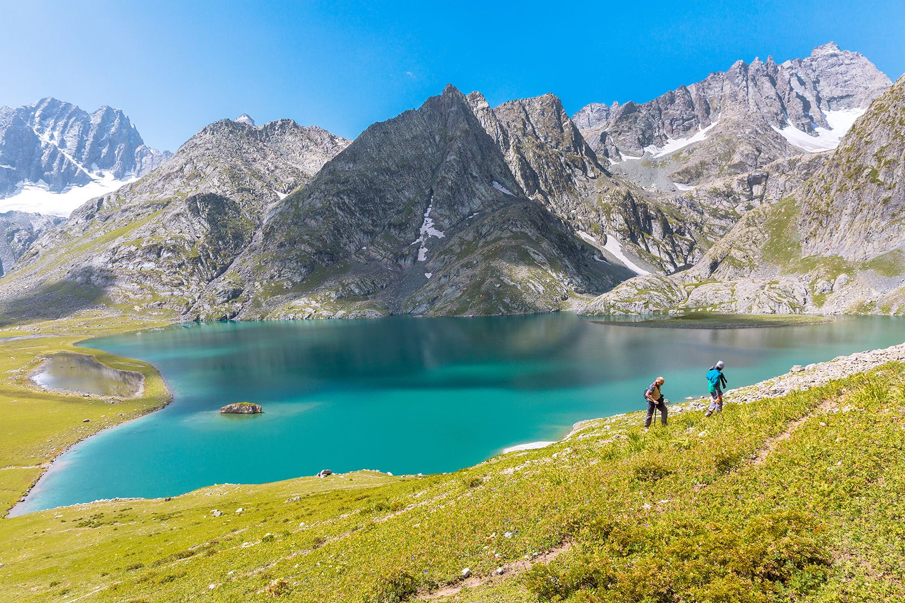
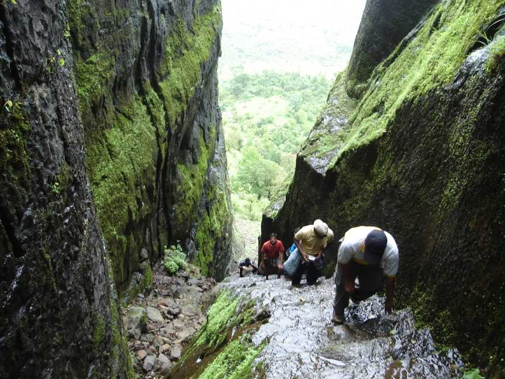

Kashmir ModerateGreat Lakes Trek: Kashmir's Hidden Paradise
Discover the stunning alpine lakes of Kashmir on one of India's most breathtaking multi-day treks through pristine wilderness.
Read Full Review →Expert guides, trail reviews, and insider tips to help you conquer the Himalayas, Sahyadris, and beyond.
In-depth reviews and trail guides from experienced trekkers who've been there

Kashmir ModerateDiscover the stunning alpine lakes of Kashmir on one of India's most breathtaking multi-day treks through pristine wilderness.
Read Full Review →
Maharashtra EasyClimb the ancient stone steps of Sudhagad Fort and explore centuries-old Maratha history perched on the Sahyadri mountains.
Read Full Review →.jpg) Uttarakhand
Moderate
Uttarakhand
Moderate
Walk through UNESCO-listed meadows bursting with over 600 species of wildflowers in the heart of the Garhwal Himalayas.
Read Full Review →.jpg) Himachal
Moderate
Himachal
Moderate
Experience one of India's most dramatic landscape transitions as you cross from lush Kullu to the stark beauty of Lahaul.
Read Full Review →.jpg) West Bengal
Moderate
West Bengal
Moderate
Stand at the roof of West Bengal and witness four of the world's five highest peaks in a single, unforgettable panorama.
Read Full Review →Best Place for Tracking is built by a community of passionate trekkers, trail runners, and mountain lovers who believe that the best adventures are the ones you earn with your own two feet.
Our team has collectively covered over 500 trails across India, from the snow-capped passes of Ladakh to the monsoon-drenched forts of the Western Ghats. Every review is based on first-hand experience — we trek the trails before we write about them.